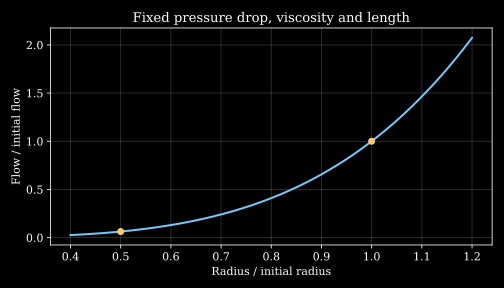

1. Structure, function and cardiovascular modeling
A vessel can remain open and still fail to deliver the flow that a tissue needs. A pressure measurement, a reconstructed lumen and a picture of moving blood answer different questions. Connecting them requires a model of the vessel, the blood and the tissue supplied downstream.
Consider one tissue bed supplied through a narrowed vessel. Its cells continue to consume oxygen. We want to determine which observations constrain delivery, which assumptions turn anatomy into a calculation, and where that calculation stops. The recurring example is deliberately simple: a long circular tube supplying a well-mixed tissue compartment. Its purpose is to expose the assumptions that a detailed simulation can otherwise conceal.
Source and evidence boundary. Official lessons 1 and 3 supply the sequence of motivation, cellular mechanics, continuum reasoning, biological organization, homeostasis and treatment-related modeling. Both complete recordings were decoded and their machine transcripts read sequentially. Selected frames were inspected; this is not a complete audiovisual review. The recordings include embedded educational clips. Their wording and artwork are not reproduced. The transport model, proofs, numerical inputs, code and exercises below are original teaching constructions. This chapter develops educational mechanics and does not select a treatment for an individual.
Why anatomy alone leaves an engineering question L1 · 01:15
The cardiovascular system moves blood between the heart, the lungs and the body's tissues. Perfusion is the passage of blood through a tissue's vascular bed. Ischemia means that the blood supply is inadequate for the tissue's requirements. The relevant requirement is functional: a visible opening does not establish an adequate supply of oxygen and nutrients.
The course introduces its subject through historical cardiovascular disease statistics. Those statistics must retain their dates and denominators. A fraction of all deaths attributed to one cause is not the probability that a person with that disease will die. A case fatality fraction divides deaths among cases by the number of cases; an incidence rate divides new events by accumulated time at risk. These quantities can change in different directions.
For example, the 2014 PURE study compared cardiovascular events and case fatality across country-income groups. Its grouped case fatality percentages are historical study results, not current national probabilities. They support the need to distinguish disease burden from treatment access and outcomes. No exact contemporary mortality percentage is inferred here from the recording's older slides or changing dashboard views.
Four intervention examples reveal different mechanical tasks. Balloon angioplasty changes the geometry of a narrowed artery while loading its wall. A bypass graft introduces an alternative path for blood. A ventricular assist device supports a ventricle, one of the heart’s pumping chambers. It supplies pumping work while exposing blood to a new flow environment. Mechanical thrombectomy engages and removes a clot in selected cases of acute ischemic stroke; the FDA device definition makes that scope explicit. These examples motivate models of contact, deformation, fluid flow and transport. They do not imply that the same model decides when each intervention is appropriate.
Our tissue-bed example captures one part of that engineering problem. Enlarging a lumen or adding a bypass changes hydraulic resistance. Whether delivery improves also depends on the pressure driving the flow and the resistance of the remaining network. A change in shape becomes a physiological claim only after those conditions are stated.
Mechanical fields meet living cells L1 · 10:24 L3 · 07:34
The endothelium is the cellular lining at the blood-facing surface of a vessel. Blood exerts a traction on that surface: a force per unit area. Its component normal to the surface is different from its tangential component. Stress has SI units of pascals, with one pascal equal to one newton per square metre.
Wall shear stress describes the tangential loading associated with blood flow at the wall. Circumferential normal stress, often called hoop stress, describes tensile or compressive loading along the wall's circumferential direction. It is a stress inside the solid wall. Pressure can produce hoop tension without producing the same quantity as fluid wall shear. Keeping those two stresses separate is essential when interpreting the review lecture's examples.
Mechanotransduction is the conversion of a mechanical stimulus into a cellular response. It supplies a biological reason to compute stresses, but a computed field is not itself a measured cellular outcome. Dai and colleagues' 2004 experiment applied arterial shear-stress waveforms to cultured human endothelial cells and observed differences in cellular organization and gene expression. The experiment links a controlled mechanical input to biological responses under its culture conditions. It does not make one scalar shear value a complete predictor of plaque formation in a person.
The review also distinguishes three cellular roles. Endothelial cells respond to the blood's mechanical environment. Vascular smooth muscle participates in changes of vessel tone and wall structure. Cardiac muscle cells generate active stress after electrical activation. A passive elastic law can describe resistance to deformation, but it cannot explain the production of active contraction unless an additional activation mechanism is supplied.
An aneurysm, a localized enlargement of a vessel, exposes another boundary. Changing the assumed blood viscosity can change a simulated wall-shear map. Predicting wall rupture additionally requires a model of the solid wall's loading, geometry, material strength and disease-related changes. The fluid's tangential traction and the wall's tensile failure criterion are different objects. Agreement between two flow simulations is not a validation of a rupture prediction.
In the running example we therefore distinguish three levels of evidence: the tube equations establish a conditional relationship between geometry and flow; a numerical program checks their implementation; a biological experiment is needed to establish how cells respond to the resulting environment. Each level answers a different question.
What a continuum field averages L1 · 17:34 L3 · 16:45
A field assigns a quantity to positions and times. For example, density \(\rho(\mathbf x,t)\) assigns mass per unit volume to position \(\mathbf x\), measured in metres, at time \(t\), measured in seconds. Density has units \(\mathrm{kg\,m^{-3}}\). A continuum description treats that field as sufficiently smooth for the derivatives used in its governing equations to be meaningful.
A literal mathematical point does not contain a representative collection of blood cells. The pointwise field is an effective description obtained by averaging on a physical scale that is small compared with the scale of the phenomenon being studied. Let \(a_c\) denote a characteristic microstructural length, \(\ell\) an averaging length and \(L_g\) the length over which the averaged field changes appreciably. The desired separation is
\[ a_c\ll\ell\ll L_g. \tag{1.1} \]The first inequality lets one average over the microstructure. The second prevents the averaging operation from erasing the variation that the model is supposed to predict. Both matter. Averaging over a whole organ can remove cell-scale fluctuations but also erase the local pressure and velocity gradients needed for device design.
The review visualizes this idea by counting material in successively smaller boxes. If a box of side \(\ell\) contains mass \(m_\ell\), define its averaged density as \(\rho_\ell=m_\ell/\ell^3\). A useful continuum range occurs when changing the box size or shifting it slightly changes the estimated density only weakly, while the box remains small relative to the macroscopic gradients. The model's density is that scale-dependent effective value, rather than a claim that matter is physically continuous at arbitrarily small distances.
For an illustrative count, suppose equal particles of mass \(m_c\) occur independently with mean count \(N\) in a box. Under the expressly assumed Poisson counting model, the count variance is \(N\). The mean density is \(m_cN/\ell^3\), its standard deviation is \(m_c\sqrt N/\ell^3\), and their ratio is \(N^{-1/2}\). A box with mean count 100 has a 10% relative counting fluctuation in this idealization; one with 10,000 has 1%. Real blood cells interact and need not obey independent Poisson statistics. The calculation explains why a representative volume needs many constituents, without claiming a blood-specific fluctuation law.
The lecture introduces a Knudsen-number analogy: a molecular mean free path divided by a macroscopic length. That ratio is useful in assessing rarefied-gas continuum approximations. A red blood cell is a deformable constituent of a dense suspension, so a gas-like molecular mean free path and a universal numerical cutoff do not by themselves establish the validity of a whole-blood model. Cell size, spatial averaging, migration, confinement and the constitutive law must also be considered. The model used for a large vessel can therefore be inappropriate for resolving a single cell passing through a narrow capillary.
The continuum approximation makes local balances possible. It does not choose the material law. A smooth velocity field can be combined with a Newtonian, shear-dependent or multiphase description, each of which adds different assumptions. The next chapter develops the kinematic objects needed to make those choices precise.
Organization, circulation and regulated function L1 · 20:36 L3 · 22:59
A capillary is a small vessel specialized for exchange between blood and surrounding tissue. A cell is a basic living structural and functional unit. A tissue is an organized cellular and extracellular material with a shared role. An organ combines tissue types into a distinct functional structure. An organ system consists of organs that cooperate in a larger task. These levels are related but cannot be replaced by one another in a model: a cell-membrane constitutive parameter is not automatically a whole-organ stiffness.
Anatomy describes structures and their relationships. Physiology describes how those structures function. Structure–function complementarity means that geometry, composition and organization help enable a function. It is an explanatory relationship to investigate, rather than a proof that every observed feature is optimal for every possible objective.
| Feature | Function and modeling implication |
|---|---|
| Separate cardiac chambers and flow paths | Maintain the separation of pulmonary and systemic streams in the normal adult arrangement. A model must represent which compartment connects to which. |
| Valves | Promote one-way flow through pressure-dependent opening and closing. An ideal diode is a simplification; real valves deform and have finite losses. |
| Ventricular myocardium | Generates pumping stress. The higher systemic pressure load, rather than distance alone, helps explain why the left ventricular wall differs from the right. |
| Thin exchange barriers and large capillary contact area | Support transfer between blood and surrounding tissue. A flow calculation must still be connected to a transport model. |
| Compliant lungs and surrounding capillary networks | Support ventilation and gas exchange. Supplying blood does not determine the amount of oxygen loaded into it. |
| Pericardial fluid | Facilitates relative motion at the heart's surrounding surfaces. Contact and friction assumptions become relevant when modeling that interface. |
An artery carries blood away from the heart; a vein carries it toward the heart. The definition concerns direction relative to the heart, not oxygen content. Pulmonary arteries carry blood from the right ventricle toward the lungs, and pulmonary veins return it toward the left atrium. The systemic path then carries blood from the left ventricle through tissues and back to the right side of the heart.
The two circuits are connected in series. In a steady model with no shunt and no accumulation of blood in either circuit, conservation requires the same mean flow through both. Different pressures are compatible with the same flow because the two circuits have different resistances and pumping loads. The inference that the left ventricle pumps farther is incomplete: pressure, geometry, material properties and loading all enter a mechanical explanation.
Blood contains plasma and formed elements, including red cells, white cells and platelets. Mature human red cells cannot divide and lack mitochondria, but they remain metabolically active and use glucose to supply energy through glycolysis. Direct metabolomic and proteomic measurements of red-cell energy pathways make that distinction explicit. Describing a cell as an oxygen carrier does not mean it is an inert particle that consumes no nutrients.
Homeostasis is the maintenance of sufficiently stable internal conditions while external conditions and demands change. Stability does not require every variable to remain constant. During a change in demand, flow, heart rate and vascular tone can change while the system supports a regulated function.
A negative-feedback mechanism opposes a disturbance in a regulated variable. The review's glucose-and-insulin example illustrates the sign of such a response. A positive-feedback mechanism amplifies a response; local clot formation illustrates why amplification can be useful when accompanied by mechanisms that limit its extent. The sign of one feedback path alone does not establish the stability or safety of the complete biological network.
A small mathematical example makes the limitation precise. A dot over a quantity denotes its derivative with respect to time. Let \(e(t)\) be a dimensionless deviation from a reference condition, \(d(t)\) an externally imposed disturbance rate in \(\mathrm{s^{-1}}\), and \(k>0\) a constant in \(\mathrm{s^{-1}}\). The original teaching model \(\dot e=d-ke\) gives \(e(t)=e(0)e^{-kt}\) when \(d=0\), so deviations decay. With constant nonzero \(d\), the equilibrium is \(e=d/k\), which is generally not zero. Negative feedback can reduce a deviation without eliminating it; delays, saturation and additional state variables can change the conclusion. This scalar model does not represent the full physiology of insulin or coagulation.
A vessel model must connect flow to delivery L1 · 32:42
The lung loads oxygen into blood, the heart supplies pumping work, vessels distribute the blood and exchange surfaces connect it to tissue. These are complementary tasks. A model can make that complementarity quantitative while retaining a clear boundary between given physiological inputs and calculated mechanical outputs.
Oxygen delivery is a conservation statement
Let \(Q_{\mathrm{in}}\) and \(Q_{\mathrm{out}}\) be the volume flow rates entering and leaving a tissue control volume. Let \(C_a\) and \(C_v\) be the oxygen amount per unit whole-blood volume at those ports, including oxygen carried by hemoglobin. Let \(N\) be the amount of oxygen stored within the control volume and \(M\ge0\) its rate of oxygen consumption. Neglect oxygen fluxes across any boundary other than the blood ports. Conservation gives
\[ \frac{dN}{dt}=Q_{\mathrm{in}}C_a-Q_{\mathrm{out}}C_v-M. \tag{1.2} \]The units of every term are amount per unit time. In a steady model with equal inlet and outlet volume flow \(Q\), equation (1.2) reduces to
\[ M=Q(C_a-C_v),\qquad E_{\mathrm{O_2}}=\frac{C_a-C_v}{C_a},\qquad M=QC_aE_{\mathrm{O_2}}. \tag{1.3} \]Here \(E_{\mathrm{O_2}}\) is the dimensionless extraction fraction and \(C_a>0\). Under the assumed consuming, steady state, \(0\le C_v\le C_a\), so \(0\le E_{\mathrm{O_2}}\le1\). Consequently \(M\le QC_a\). No amount of extraction can compensate for an arbitrarily small flow when consumption and arterial oxygen content remain fixed.
This bound follows from conservation and nonnegative oxygen content. It does not determine \(C_a\), capillary transfer kinetics or the tissue's actual demand. Those require additional physiology. In particular, a successful pressure calculation cannot compensate for an unmodeled failure of oxygen loading in the lungs.
Deriving a pressure–flow law under stated assumptions
For the mechanical part, idealize the supply segment as a straight, rigid circular tube of radius \(a>0\) and length \(L>0\), both measured in metres. Assume steady, laminar, fully developed flow of an incompressible Newtonian fluid with constant dynamic viscosity \(\mu>0\), in \(\mathrm{Pa\,s}\). Neglect gravity and other body forces. These assumptions deliberately remove pulsation, wall deformation, cellular migration, entrance losses and the three-dimensional geometry of a short stenosis.
Choose an axial coordinate \(z\) increasing from inlet to outlet and a radial coordinate \(r\in[0,a]\). The axial velocity is \(u(r)\), in \(\mathrm{m\,s^{-1}}\). Let the inlet and outlet pressures be \(p_{\mathrm{in}}\) and \(p_{\mathrm{out}}\), with \(\Delta p=p_{\mathrm{in}}-p_{\mathrm{out}}>0\). The constant driving pressure gradient has magnitude \(G=\Delta p/L\), in \(\mathrm{Pa\,m^{-1}}\).
For this fully developed unidirectional flow, axial momentum balance and the Newtonian shear law give
\[ \frac1r\frac{d}{dr}\left(r\mu\frac{du}{dr}\right)=-G. \]Integrating once gives \(r\mu u'=-Gr^2/2+A\), where \(A\) is an integration constant. A finite, nonsingular stress at the axis requires \(A=0\). Thus \(u'=-Gr/(2\mu)\). A second integration, together with the no-slip condition \(u(a)=0\) at the stationary wall, yields
\[ u(r)=\frac{G}{4\mu}(a^2-r^2). \]Integrate that velocity over concentric annular areas \(2\pi r\,dr\) to obtain the volume flow:
\[ Q=2\pi\int_0^a u(r)r\,dr =\frac{\pi G}{2\mu}\left[\frac{a^2r^2}{2}-\frac{r^4}{4}\right]_0^a =\frac{\pi a^4\Delta p}{8\mu L}. \tag{1.4} \]The hydraulic resistance, defined by \(R_h=\Delta p/Q\), is therefore \(R_h=8\mu L/(\pi a^4)\), with units \(\mathrm{Pa\,s\,m^{-3}}\). It is a property of this model, geometry and material law. It is not a universal property assigned to an artery independently of the conditions in which it is used.
The magnitude of the wall shear stress is
\[ \tau_w=\mu|u'(a)|=\frac{\Delta p\,a}{2L} =\frac{4\mu Q}{\pi a^3}. \tag{1.5} \]Both forms describe the same solution. They expose different controlled inputs. If the radius changes from \(a\) to \(\alpha a\), with \(\alpha>0\), keeping \(\Delta p,\mu,L\) fixed gives \(Q_1/Q_0=\alpha^4\) and \(\tau_{w,1}/\tau_{w,0}=\alpha\). Keeping \(Q,\mu,L\) fixed instead requires \(\Delta p_1/\Delta p_0=\alpha^{-4}\) and gives \(\tau_{w,1}/\tau_{w,0}=\alpha^{-3}\).
| Radius ratio | Resistance ratio | Flow ratio, fixed pressure drop | Wall-shear ratio, fixed pressure drop | Pressure-drop ratio, fixed flow | Wall-shear ratio, fixed flow |
|---|---|---|---|---|---|
| \(1/2\) | 16 | \(1/16\) | \(1/2\) | 16 | 8 |
Thus a statement that narrowing increases wall shear must identify the flow and pressure conditions behind it. The review's dilation example belongs in such a coupled pressure–flow analysis. In an actual network, neither local flow nor local pressure drop need remain fixed. The pump, downstream resistance and other vascular paths interact.

Returning to the oxygen requirement
Use the illustrative inputs \(a=0.001\,\mathrm m\), \(L=0.1\,\mathrm m\), \(\mu=0.004\,\mathrm{Pa\,s}\) and \(\Delta p=1000\,\mathrm{Pa}\). Equation (1.4) gives \(Q_0=0.981748\,\mathrm{mL\,s^{-1}}=0.058905\,\mathrm{L\,min^{-1}}\). This is the flow assigned to one modeled bed, not a stated whole-body cardiac output.
For the oxygen balance, choose \(C_a=9\,\mathrm{mmol\,L^{-1}}\) and \(C_{v,0}=6\,\mathrm{mmol\,L^{-1}}\). These are declared teaching inputs. The initial extraction fraction is \(1/3\), and the consumption rate is \(M=0.176715\,\mathrm{mmol\,min^{-1}}\). Now halve the entire uniform tube's radius while holding its pressure drop fixed. Its flow becomes \(0.003682\,\mathrm{L\,min^{-1}}\). Maintaining the same consumption in (1.3) would require
\[ C_{v,1}=C_a-\frac{M}{Q_1}=9-48=-39\,\mathrm{mmol\,L^{-1}}. \]A negative venous oxygen content is inadmissible. It diagnoses an impossible combination of the imposed assumptions, rather than predicting a negative concentration. At least one condition must change: consumption, oxygen input, flow, pressure, geometry, alternative supply or the steady-state assumption.
More generally, if the initial extraction fraction is \(E_0\), fixed pressure drop gives the necessary capacity condition \(\alpha^4\ge E_0\), or \(\alpha\ge E_0^{1/4}\). For the chosen \(E_0=1/3\), the radius ratio is bounded below by 0.759836. This is a bound inside the teaching model. It is not a diagnostic cutoff for coronary narrowing. A clinical interpretation would require a substantially richer and validated model.
From an image to a functional quantity L1 · 43:49 L3 · 40:07
A stenosis is a narrowing. Its geometric description does not by itself determine the flow available to tissue. Fractional flow reserve, or FFR, concerns the maximum flow with a stenosis relative to a reference maximum flow without it. The original pressure-based work of Pijls and colleagues relates that functional quantity to pressures during pharmacological vasodilation. The following two-resistance derivation explains the principle under deliberately restricted assumptions.
Let \(R_s\ge0\) represent the supply segment's resistance and \(R_m>0\) the downstream microvascular resistance, in the same hydraulic-resistance units. Let \(p_a>p_v\) be proximal arterial and venous pressures and \(p_d\) the pressure between the two resistances. Use one common pressure datum. Neglect alternative collateral supply paths and assume a steady series circuit. During the comparison, hold \(p_a,p_v,R_m\) fixed, with \(R_m\) representing the same approximately minimal downstream resistance in both cases.
The stenosed circuit has \(Q_s=(p_a-p_v)/(R_s+R_m)\), whereas the idealized reference with \(R_s=0\) has \(Q_n=(p_a-p_v)/R_m\). Their ratio is \(Q_s/Q_n=R_m/(R_s+R_m)\). Since the downstream pressure drop is \(p_d-p_v=Q_sR_m\), substitution gives
\[ \mathrm{FFR}_{\mathrm{model}}=\frac{Q_s}{Q_n} =\frac{R_m}{R_s+R_m} =\frac{p_d-p_v}{p_a-p_v}. \tag{1.6} \]The approximation \(p_d/p_a\) additionally neglects venous pressure relative to arterial pressure in this ratio. For an illustrative \(p_a=100\,\mathrm{mmHg}\), \(p_v=10\,\mathrm{mmHg}\) and \(R_s=R_m\), the distal pressure is 55 mmHg. Equation (1.6) gives 0.5; dropping venous pressure gives 0.55. The approximation's error is visible without changing any anatomy.
The same geometric narrowing can have different functional consequences when the downstream resistance or supply conditions differ. A computational workflow that reconstructs geometry from an image must therefore also specify constitutive laws and boundary conditions. Solving the numerical equations accurately verifies neither the inferred downstream physiology nor the clinical validity of an individual prediction. No treatment threshold is selected by this example.
An executable check of the complete example
The program takes the fixed tube and oxygen-content inputs stated above. It returns the corresponding flow, consumption, feasibility bound and two conditional shear ratios. It requires only Python's standard library, makes no network requests and reads or writes no files. Its assertions check the algebraic radius scaling and the inadmissible oxygen result; a failed check raises an assertion error. The inputs describe a teaching construction, with no patient data or fitted material parameters.
from math import pi
radius, length, viscosity, pressure_drop = 0.001, 0.1, 0.004, 1000.
flow = pi*radius**4*pressure_drop/(8*viscosity*length)
flow_l_min = flow*1000*60
arterial_content, venous_content = 9., 6.
consumption = flow_l_min*(arterial_content-venous_content)
ratio = 0.5
reduced = flow_l_min*ratio**4
required_venous = arterial_content-consumption/reduced
minimum_ratio = ((arterial_content-venous_content)
/ arterial_content)**0.25
assert abs(required_venous+39) < 1e-10
assert abs((ratio**4)*16-1) < 1e-12
print(f'initial flow: {flow_l_min:.6f} L/min')
print(f'initial oxygen extraction: {consumption:.6f} mmol/min')
print(f'flow after radius halving: {reduced:.6f} L/min')
print(f'required venous oxygen content: {required_venous:.3f} mmol/L')
print(f'capacity-bound radius ratio: {minimum_ratio:.6f}')
print(f'wall-shear ratio at fixed pressure drop: {ratio:.3f}')
print(f'wall-shear ratio at fixed flow: {ratio**-3:.3f}')
initial flow: 0.058905 L/min initial oxygen extraction: 0.176715 mmol/min flow after radius halving: 0.003682 L/min required venous oxygen content: -39.000 mmol/L capacity-bound radius ratio: 0.759836 wall-shear ratio at fixed pressure drop: 0.500 wall-shear ratio at fixed flow: 8.000
The negative oxygen content is intentionally retained in the output. It shows that the imposed steady demand cannot be met, rather than quietly clipping the answer to zero and hiding the failed assumption. The numerical agreement checks an implementation of the derived model. It does not validate that model against a living vascular bed.
What the model establishes and what remains open
Geometry affects delivery through a constitutive law, driving conditions and network connections. The tube calculation establishes a fourth-power dependence under its assumptions. The oxygen balance places a capacity bound on the chosen steady state. The series-resistance model explains why a functional flow ratio can differ from a geometric description of narrowing.
The modeled segment is uniformly narrow, long and rigid. A short stenosis can produce entrance effects, separation and inertial losses absent from equation (1.4). Pulsatile flow, wall motion, non-Newtonian blood behavior, changing tissue demand and alternative supply paths require additional state variables or different equations. A closed circulation model describes the bulk flow route; it does not make vessel walls impermeable to water, solutes or cells.
Cellular experiments establish particular biological responses to defined conditions. A mechanical simulation supplies inputs that may help investigate such responses, but it cannot replace measurements of material properties, physiological boundary conditions or biological outcomes. These distinctions remain necessary as the models become more detailed. The next chapter introduces motion, deformation and objective strain-rate measures so that the mechanical assumptions can be expressed at the material-point level.
Problems and worked solutions
Problem 1 · Keep the denominator. In a hypothetical year there are 100,000 deaths, including 30,000 cardiovascular deaths. In a separate cohort of 400 people with a specified cardiovascular event, 20 die during follow-up. Calculate the two fractions and explain why they cannot be substituted for one another.
Worked solution
The cause-of-death fraction is \(30{,}000/100{,}000=0.30\), or 30%. The cohort's case fatality fraction is \(20/400=0.05\), or 5%, over its stated follow-up. The first denominator contains all deaths, while the second contains people who experienced the specified event. Neither supplies an individual probability without information about population, event definition and follow-up. Different denominators are sufficient to explain why the two percentages need not agree.
Problem 2 · A representative volume is a scale choice. Under the Poisson counting assumption used above, an averaging cube has mean particle count 100. What happens to the mean count and relative counting fluctuation when its side length doubles? Why can that operation still make a continuum model worse?
Worked solution
Doubling each side multiplies the volume and mean count by \(2^3=8\), giving \(N=800\). The relative fluctuation changes from \(1/\sqrt{100}=0.10\) to \(1/\sqrt{800}=0.03536\), about 3.54%. The counting noise decreases. However, the averaging length has moved closer to the macroscopic gradient length \(L_g\). If the larger box spans substantial changes in velocity, density or composition, it suppresses variation that the model must retain. A representative volume must satisfy both parts of (1.1); increasing it without limit does not solve the modeling problem.
Problem 3 · The boundary condition changes the conclusion. In the tube model, halve the radius while leaving length and viscosity unchanged. Derive the flow and wall-shear ratios first at fixed pressure drop, then at fixed flow. Does dilation necessarily reduce wall shear?
Worked solution
Equation (1.4) gives \(Q\propto a^4\) at fixed pressure drop, so the flow becomes \(Q_0/16\). Equation (1.5) then gives \(\tau_w\propto a\), so shear becomes \(\tau_{w,0}/2\). At fixed flow, resistance increases sixteenfold and requires a sixteenfold pressure-drop increase. The second form of (1.5) gives \(\tau_w\propto a^{-3}\), so shear increases eightfold. Conversely, dilation decreases shear under fixed-flow conditions but increases it in the fixed-pressure-drop uniform-tube model. A physiological dilation response changes a coupled network, so the complete boundary conditions must be modeled before deciding how a local shear stimulus changes.
Problem 4 · Can extraction rescue reduced flow? A bed initially extracts one quarter of its arterial oxygen input. Keep arterial content, consumption, pressure drop, viscosity and tube length fixed. Test radius ratios 0.8 and 0.6 against the oxygen-capacity bound.
Worked solution
The required extraction fraction becomes \(E_1=E_0/\alpha^4\). For \(\alpha=0.8\), it is \(0.25/0.4096=0.61035\), within the model's interval \([0,1]\). Thus the capacity bound does not rule out that state, although transfer kinetics or physiology might. For \(\alpha=0.6\), the required fraction is \(0.25/0.1296=1.92901\), which exceeds one and is impossible under the imposed assumptions. The general necessary bound is \(\alpha\ge(1/4)^{1/4}=1/\sqrt2\approx0.707107\). Passing a necessary bound is not a proof that a real tissue can attain the required extraction.
Problem 5 · The same supply resistance, different functional ratio. Hold \(R_s=1\) in an arbitrary fixed resistance unit and compare \(R_m=1\) with \(R_m=3\), keeping \(p_a-p_v\) fixed. Calculate the two model FFR values and the absolute flow relationship.
Worked solution
Equation (1.6) gives \(1/(1+1)=0.5\) in the first case and \(3/(1+3)=0.75\) in the second. However, the absolute stenosed flows are \((p_a-p_v)/2\) and \((p_a-p_v)/4\), respectively. The second flow is half the first even though its normalized ratio is larger. Its reference flow without the supply resistance is also lower, namely \((p_a-p_v)/3\) rather than \((p_a-p_v)\). A normalized functional index must be interpreted with its reference state and downstream assumptions.
Problem 6 · Negative feedback leaves a steady error. Solve \(\dot e=d-ke\) for constant \(d\), \(k>0\) and initial value \(e(0)=e_0\). Check the solution by differentiation. What happens if \(k=0\)?
Worked solution
The equilibrium is \(e_*=d/k\). Subtracting it gives \(d(e-e_*)/dt=-k(e-e_*)\), hence \(e(t)=d/k+(e_0-d/k)e^{-kt}\). Differentiating yields \(-k(e_0-d/k)e^{-kt}\), exactly \(d-ke(t)\), and the initial condition is satisfied. The deviation from equilibrium decays with time constant \(1/k\), but the equilibrium differs from zero when \(d\ne0\). For \(k=0\), the equation becomes \(\dot e=d\) and gives \(e=e_0+dt\). This scalar proof does not establish stability of a delayed, nonlinear biological controller.
Problem 7 · A bypass changes a network. In a steady ideal circuit, a supply resistance \(R_s=4\) is in series with a downstream resistance \(R_m=1\). Add a graft of resistance \(R_g=4\) connecting the same two nodes as \(R_s\). All resistance values use one common unit. At fixed proximal-to-venous pressure difference, calculate the new total resistance and the flow increase.
Worked solution
The supply segment and graft have the same pressure difference \(\Delta p_s\). Their combined flow is \(Q=\Delta p_s/R_s+\Delta p_s/R_g\), so \(R_{\mathrm{parallel}}=(1/R_s+1/R_g)^{-1}=2\). The downstream resistance remains in series, giving total resistance \(2+1=3\), compared with \(4+1=5\) initially. Fixed total pressure difference therefore increases modeled flow by the factor \(5/3\). The result assumes that graft resistance, the downstream bed and driving pressures remain as declared. Real geometry, competitive flow, compliance and biological adaptation can change those assumptions; this exercise is an engineering circuit calculation rather than surgical planning.
Sources and inspection scope
- Prof. Anand Mohan, NPTEL IIT Hyderabad: Lecture 1, Course Overview; Lecture 3, Review of Course Overview. Full local machine-transcript reading; selected visual inspection; approximate timestamp navigation.
- Official course outline and official syllabus: attribution, prerequisites and topic scope.
- Yusuf et al., Cardiovascular Risk and Events in 17 Low-, Middle-, and High-Income Countries (2014): inspected event-rate and case-fatality definitions and historical grouped results.
- Dai et al., Distinct endothelial phenotypes evoked by arterial waveforms (2004): inspected abstract and introductory experimental design; the chapter does not reproduce the paper's figures or make a patient-level disease prediction.
- Multi-omics Evidence for Inheritance of Energy Pathways in Red Blood Cells (2016): red-cell metabolic activity and glycolytic energy production.
- Pijls et al., Fractional flow reserve: a useful index to evaluate the influence of an epicardial coronary stenosis on myocardial blood flow (1995): inspected primary-study abstract for the functional definition and pressure conditions. Equation (1.6) is an independently worked idealized series-resistance derivation.
- FDA neurovascular mechanical thrombectomy device (POL): the acute-ischemic-stroke scope of the thrombectomy example. No device or treatment recommendation is made.